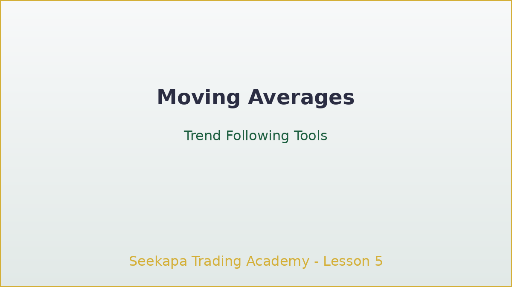
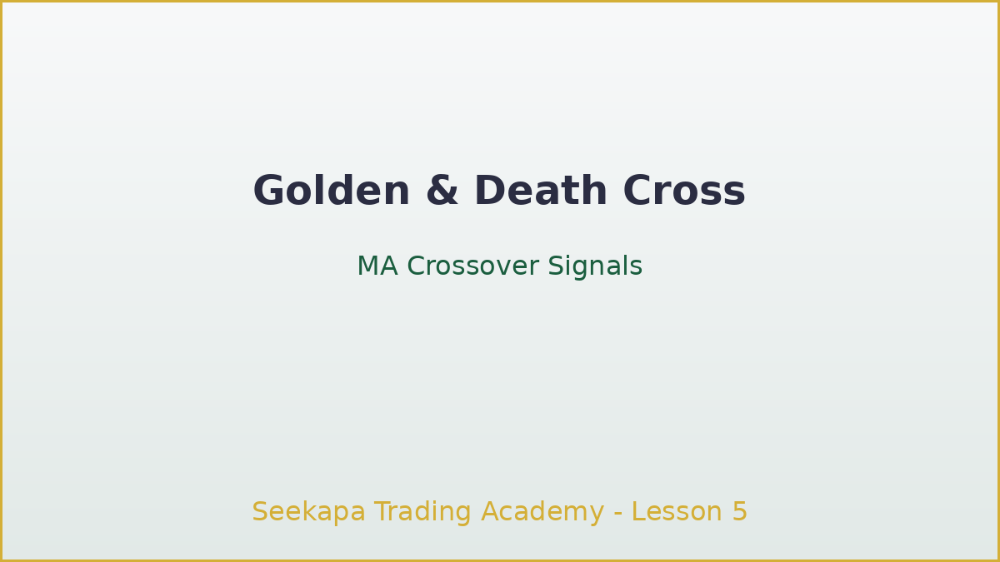
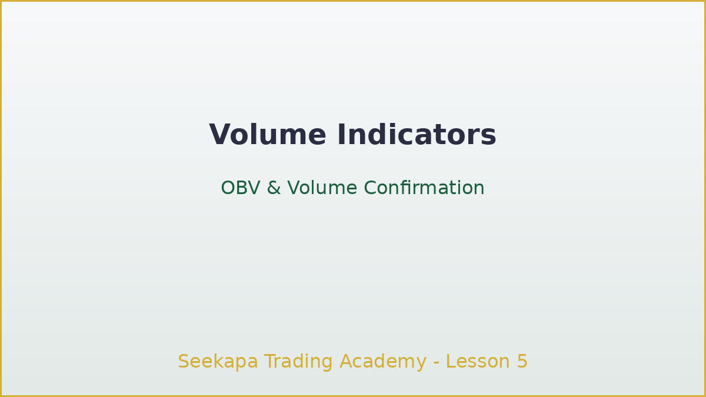
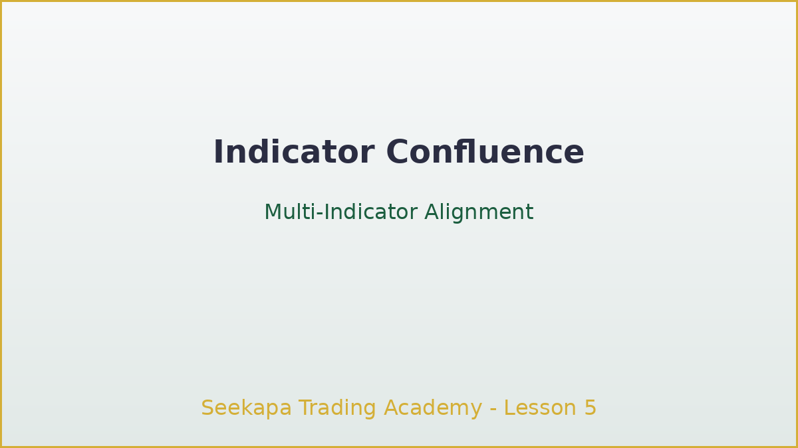

مؤشرات التداول والأدوات
أتقن المؤشرات التقنية لتأكيد الإشارات وتحسين التوقيت
الفيديو قيد الإعداد
المدة: 90-120 ثانية | الجودة: 1080p
أهداف التعلم
- فهم كيفية عمل مؤشرات التداول وتطبيقاتها العملية
- تعلم استخدام المتوسطات المتحركة لتحديد الاتجاهات
- إتقان مؤشرات الزخم مثل RSI و MACD لتحليل القوة
- اكتشف كيفية دمج المؤشرات للحصول على إشارات أفضل دون الإفراط في التحليل
تعمل مؤشرات التداول كحسابات رياضية بناءً على السعر والحجم أو بيانات السوق التي تساعد على تحديد الاتجاهات والزخم والانعكاسات المحتملة. بينما يشكل حركة السعر الأساس، توفر المؤشرات تأكيداً إضافياً وتساعد على توقيت الدخول والخروج بدقة أكبر. في هذا الدرس، ستتعلم أكثر المؤشرات عملية يستخدمها التجار المحترفون وكيفية دمجها في إعدادات تداول عالية الاحتمالية.
المتوسطات المتحركة: أدوات تتبع الاتجاه
تعمل المتوسطات المتحركة على تسهيل تقلبات السعر لتحديد الاتجاهات الأساسية وتوفير مستويات دعم ومقاومة ديناميكية. المتوسطات المتحركة البسيطة (SMA) تعطي وزناً متساوياً لجميع الأسعار، بينما المتوسطات المتحركة الأسية (EMA) تركز على الأسعار الحالية بقوة أكبر. الفترات الشائعة تشمل 20 و 50 و 100 و 200، حيث توفر الفترات الأطول إشارات أكثر سلاسة. تولد تقاطعات المتوسطات المتحركة إشارات تداول قوية: تقاطع الذهب (عندما يعبر EMA 50 فوق EMA 200) يشير إلى تعزز الزخم الصعودي، وتقاطع الموت (عندما يعبر EMA 50 تحت EMA 200) يشير إلى ضغط هبوطي محتمل.
مؤشرات الزخم: الظروف المشتراة أو المباعة بإفراط
تتذبذب مؤشرات الزخم بين حدود ثابتة لتحديد تغييرات الزخم والظروف القصوى. يقيس مؤشر القوة النسبية (RSI) سرعة وحجم تغييرات الأسعار، متذبذباً بين 0 و 100. القراءات فوق 70 تشير إلى ظروف مشتراة بإفراط قد يكون السعر مستحقاً لتصحيح، بينما القراءات أقل من 30 تشير إلى ظروف مباعة بإفراط. MACD يجمع بين تتبع الاتجاه والزخم من خلال إظهار العلاقات بين متوسطين متحركين أسيين. عندما يعبر خط MACD فوق خط الإشارة، يظهر زخم صعودي قوي؛ عند عبوره للأسفل، يهيمن الزخم الهبوطي. الاختلافات بين السعر ومؤشرات الزخم توفر إشارات انعكاس قوية بشكل خاص.
مؤشرات الحجم: تأكيد تحركات الأسعار
تحلل مؤشرات الحجم نشاط التداول وتدفق الأموال لتأكيد تحركات الأسعار وتحديد الانعكاسات المحتملة. يقوم مؤشر التراكم على الحجم (OBV) بإنشاء خط تراكمي يجب أن يتجه مع الأسعار في التحركات الصحيحة - الاختلافات تشير إلى تحركات ضعيفة قد تنعكس. متوسط السعر المرجح بالحجم (VWAP) يُظهر متوسط السعر المرجح بالحجم، بمثابة معيار لنشاط الأسواق المؤسسية. يراقب التجار المحترفون تأكيد الحجم: التحركات القوية على حجم مرتفع أكثر موثوقية من تحركات الأسعار على حجم خفيف.
دمج المؤشرات للحصول على إشارات أفضل
يؤدي دمج مؤشرات متعددة إلى تحسين جودة الإشارات مع تجنب الإفراط في التحليل. يجمع النهج الشائع بين مؤشرات تتبع الاتجاه (المتوسطات المتحركة) ومؤشرات الزخم (RSI أو MACD) لتحديد الإعدادات حيث يتفق كلاهما على الاتجاه. يضيف تأكيد الحجم طبقة ثالثة حاسمة من خلال التأكد من أن نشاط التداول الكافي يدعم التحرك. تحليل أطر زمنية متعددة يساعد على تأكيد الإشارات عبر آفاق زمنية مختلفة: تحديد اتجاه الاتجاه في الرسوم البيانية اليومية، ثم التداول في أطر زمنية أقل للحصول على نقاط دخول محسنة.
النقاط الرئيسية
- تساعد المتوسطات المتحركة في تحديد الاتجاهات وتوفير مستويات دعم ومقاومة ديناميكية
- تحدد مؤشرات الزخم تغييرات الزخم والظروف المشتراة أو المباعة بإفراط للانعكاسات
- تؤكد مؤشرات الحجم تحركات الأسعار وتكشف نشاط المؤسسات
- يحسن دمج المؤشرات جودة الإشارات لكن تجنب الإفراط في التحليل
- فهم قيود المؤشرات يمنع الأخطاء التجارية الشائعة
اختبر معلوماتك
تمرين عملي
قم بإعداد مخطط بثلاثة مؤشرات: EMA بفترة 20، RSI (14)، وأعمدة الحجم. تدرب على تحديد إشارات التقارب حيث تتفق مؤشرات متعددة على نفس الاتجاه. وثق خمس أمثلة محددة على مدار الأسبوع القادم: سجل التاريخ والأداة وكيف أكد كل مؤشر التحرك. لاحظ كيف أداء هذه الإشارات المتقاربة مقارنة بإشارات مؤشر واحد. يبني هذا التمرين مهارات التعرف على الأنماط الأساسية للتداول الاحترافي.